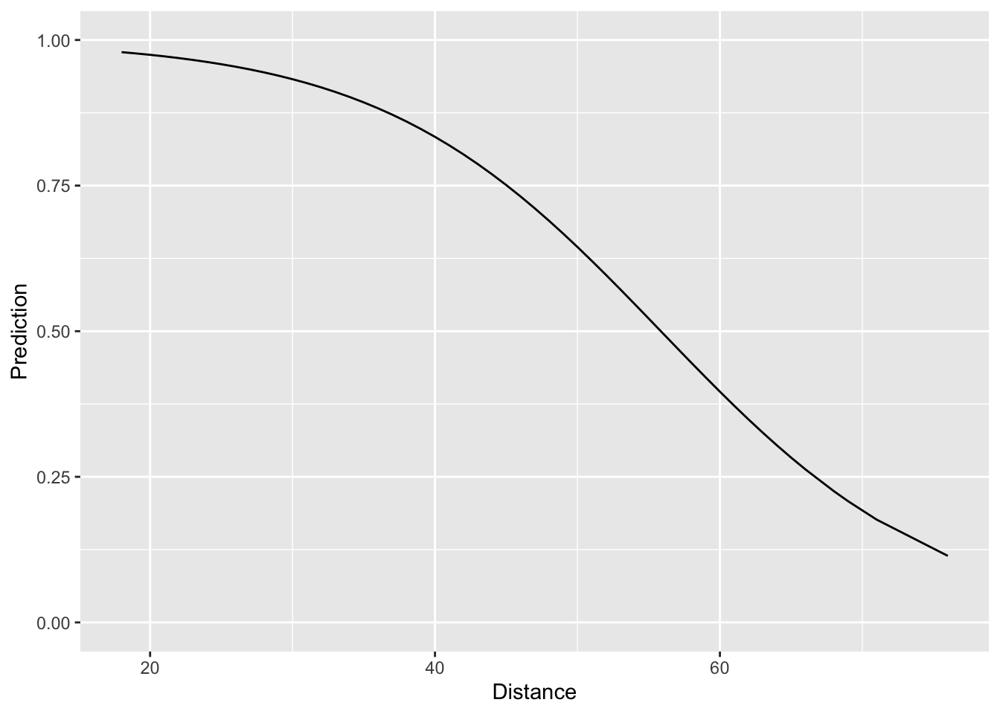

Lecture 8: Logistic Regression
In Lecture 7, we predicted field goal success using a similar strategy to the one we used in Lecture 4 to predict batting averages in 2015 using batting averages from 2014. This strategy amounted to “binning-and-averaging: we divided the dataset into many small bins, based on the value of the input or predictor, and then averaged the outcomes within each bin. In Lecture 6, we used linear regression to take this process to the logical extreme with infinitessimally small bins in the context of predicting a continuous response. Today, we will use logistic regression to take the binning-and-averaging to predicting binary responses to the same logical extreme. Just as our goal with linear regression was to predict the average outcome for any given input, our ultimate goal with logistic regression is to produce a probability forecast for each input. For instance, in the context of NFL field goals, we would like to know, say, what the probability is that a kicker successfully converts a 45-yard field goal attempt.
Logistic Regression with glm()
Before we get started, we will load the tidyverse and modelr packages and also load the tbls we saved at the end of Lecture 7.
> library(tidyverse)
> library(modelr)
>
> load("data/nfl_fg.RData")We can fit a logistic regression model using the function
glm(). In the code block below, we fit a model of the
success probability as a function of distance. You’ll notice that the
syntax is very similar to the lm() syntax we saw in Lecture 6. The major difference is that we have
to include an argument family = binomial. This tells R that
we are fitting a regression model for binary outcomes.
> logit_distance <- glm(Success~Distance, family = binomial, data = fg_train)We can visualize this model fit by (i) creating a grid of distance
values and (ii) plotting the estimated probability of field goal success
at each of the distances in the grid. We can do this using
data_grid() and add_predictions() just like we
did in Lecture 6. Notice, however, that in
add_predictions() we have an extra argument
type="response". In the context of logistic regression,
this argument tells R that we want to return the fitted probabilities
instead of the fitted log-odds.
> distance_preds <-
+ fg_train %>%
+ data_grid(Distance) %>%
+ add_predictions(model = logit_distance, type = "response", var = "Prediction")
>
> ggplot(data = distance_preds) +
+ geom_line(mapping = aes(x = Distance, y = Prediction)) +
+ ylim(c(0,1))
Looking at the plot, things look quite reasonable – short field goals
are nearly always made and as the distance increases, the fitted
probability of success goes down in a non-linear fashion. The question
we face now is assessing how well our simple logistic regression model
compares to the “binning-and-averaging” models we built in Lecture 7. In order to assess this, we would
like to append the model predictions to the tbls fg_train
and fg_test, respectively. Rather than using a join, we can
actually do this directly with add_prediction(). The reason
for this is that add_prediction() is able to accept as an
argument the output of lm() or glm(). Since
our “binning-and-averaging” models were not created by either of these
functions we had to use a join in Lecture 7.
The codeblock below shows how to add our predictions to
fg_train and fg_test and also computes the
Brier score associated with all of the models we’ve built so far. Notice
that we are saving the predictions in a column called
“phat_dist_logit.”
> fg_train <-
+ fg_train %>%
+ add_predictions(model = logit_distance, var = "phat_dist_logit", type = "response")
> summarise(fg_train,
+ phat_all = mean( (Success - phat_all)^2),
+ phat_kicker = mean( (Success - phat_kicker)^2),
+ phat_dist_10 = mean( (Success - phat_dist_10)^2),
+ phat_dist_5 = mean( (Success - phat_dist_5)^2),
+ phat_dist_2 = mean( (Success - phat_dist_2)^2),
+ phat_dist_logit = mean( (Success - phat_dist_logit)^2))
# A tibble: 1 × 6
phat_all phat_kicker phat_dist_10 phat_dist_5 phat_dist_2 phat_dist_logit
<dbl> <dbl> <dbl> <dbl> <dbl> <dbl>
1 0.140 0.138 0.125 0.123 0.123 0.123Looking at the Brier scores, we see that our new logistic model fits the data much better than “phat_all”, the overall average success rate, and “phat_kicker”, the kicker-specific overall average. Moreover, it also fits better than the first model we built where we binning the distances into 10-yard increments. It turns out, however, that our logistic regression model fits the training data worse than the the models which binned the distances into 5-yard and 2-yard increments. However, to better assess whether the new logistic regression model is truly better than these two, we have to look at how well it performs out-of-sample on the testing dataset.
> fg_test <-
+ fg_test %>%
+ add_predictions(model = logit_distance, var = "phat_dist_logit", type = "response")
>
>
> summarise(fg_test,
+ phat_all = mean( (Success - phat_all)^2),
+ phat_kicker = mean( (Success - phat_kicker)^2),
+ phat_dist_10 = mean( (Success - phat_dist_10)^2),
+ phat_dist_5 = mean( (Success - phat_dist_5)^2),
+ phat_dist_2 = mean( (Success - phat_dist_2)^2),
+ phat_dist_logit = mean( (Success - phat_dist_logit)^2))
# A tibble: 1 × 6
phat_all phat_kicker phat_dist_10 phat_dist_5 phat_dist_2 phat_dist_logit
<dbl> <dbl> <dbl> <dbl> <dbl> <dbl>
1 0.134 0.133 0.120 0.118 0.118 0.117We see clearly, now, that our logistic regression model has the best out-of-sample performance. This would indicate that “phat_dist_5” and “phat_dist_2”, the models formed by binning distances into 5-yard and 2-yard increments and computing the overall success rate within each bin, over-fit the training data.
Multiple Regression
Up to this point, we have only talked about regression models with a single predictor (Exception: the end of Problem Set 6 had an example of multiple regression). Though the logistic regression model we just built out-performs all of the ones we had built before, it is still pretty limited. After all, for any specific distance, this model estimates that every kicker has exactly the same chance of making a field goal. The code below fits a logistic regression model that accounts for both the kicker and the distance.
> logit_dist_kicker <- glm(Success ~ Distance + Kicker, family = binomial, data = fg_train)Before proceeding, notice that the syntax for fitting such a model
with multiple predictors is really similar to the syntax we used above
to fit a simple logistic regression model. In both cases, we used
glm() and specified family = binomial and
data = fg_train. The only difference is on the right hand
side of the ~ in the formula, the first argument
in glm(). Now, we have
Success ~ Distance + Kicker instead of just
Success ~ Distance. The syntax
Distance + Kicker tells R that we want to include both the
distance and identity of the kicker to predict field goal success.
To visualize the predictions made by this model, we can also use
data_grid(). Since there are so many kickers in our
dataset, we will restrict our attention to just a small handful.
> dist_kick_grid <-
+ fg_train %>%
+ filter(Kicker %in% c("Bailey", "Vinatieri", "Zuerlein")) %>%
+ data_grid(Distance, Kicker) %>%
+ add_predictions(model = logit_dist_kicker, var = "Prediction", type = "response")
>
> ggplot(data = dist_kick_grid) +
+ geom_line(mapping = aes(x = Distance, y = Prediction, col = Kicker))
In the call to data_grid() we included all of the
variables that went into the model (Distance and
Kicker). This creates a tbl with every combination of
distance and kicker. Note that if we had not filtered to just three
kickers, the resulting tbl would incredibly long. Just like we did
earlier, in our call to geom_line(), we specified that we
wanted to plot distance on the x-axis and the predicted success
probability on the y-axis. However, we now have an additional aesthetic
col = Kicker. Since our model predicts different
probabilities for different kickers, this additional aesthetic tells
ggplot to use a separate color for each kicker’s probability curve. We
can see that the model predicts Dan Bailey to have consistently higher
chances of converting a field goal successfull than either Greg Zuerlein
or Adam Vinatieri.
Just like we did above, we can also assess the in-sample and out-of-sample prediction performance by computing the Brier score:
> fg_train <-
+ fg_train %>%
+ add_predictions(model = logit_dist_kicker, type = "response", var = "phat_dist_kick_logit")
> summarise(fg_train,
+ phat_all = mean( (Success - phat_all)^2),
+ phat_kicker = mean( (Success - phat_kicker)^2),
+ phat_dist_10 = mean( (Success - phat_dist_10)^2),
+ phat_dist_5 = mean( (Success - phat_dist_5)^2),
+ phat_dist_2 = mean( (Success - phat_dist_2)^2),
+ phat_dist_logit = mean( (Success - phat_dist_logit)^2),
+ phat_dist_kick_logit= mean( (Success - phat_dist_kick_logit)^2))
# A tibble: 1 × 7
phat_all phat_kicker phat_dist_10 phat_dist_5 phat_dist_2 phat_dist_logit phat_dist_kick_logit
<dbl> <dbl> <dbl> <dbl> <dbl> <dbl> <dbl>
1 0.140 0.138 0.125 0.123 0.123 0.123 0.121> fg_test <-
+ fg_test %>%
+ add_predictions(model = logit_dist_kicker, type = "response", var = "phat_dist_kick_logit")
> summarise(fg_test,
+ phat_all = mean( (Success - phat_all)^2),
+ phat_kicker = mean( (Success - phat_kicker)^2),
+ phat_dist_10 = mean( (Success - phat_dist_10)^2),
+ phat_dist_5 = mean( (Success - phat_dist_5)^2),
+ phat_dist_2 = mean( (Success - phat_dist_2)^2),
+ phat_dist_logit = mean( (Success - phat_dist_logit)^2),
+ phat_dist_kick_logit= mean( (Success - phat_dist_kick_logit)^2))
# A tibble: 1 × 7
phat_all phat_kicker phat_dist_10 phat_dist_5 phat_dist_2 phat_dist_logit phat_dist_kick_logit
<dbl> <dbl> <dbl> <dbl> <dbl> <dbl> <dbl>
1 0.134 0.133 0.120 0.118 0.118 0.117 0.118It turns out that even though accounting for the distance and kicker resulted in even better in-sample performance (i.e. lower Brier score on the training data), the out-of-sample performance was worse than the model that accounted only for the distance.